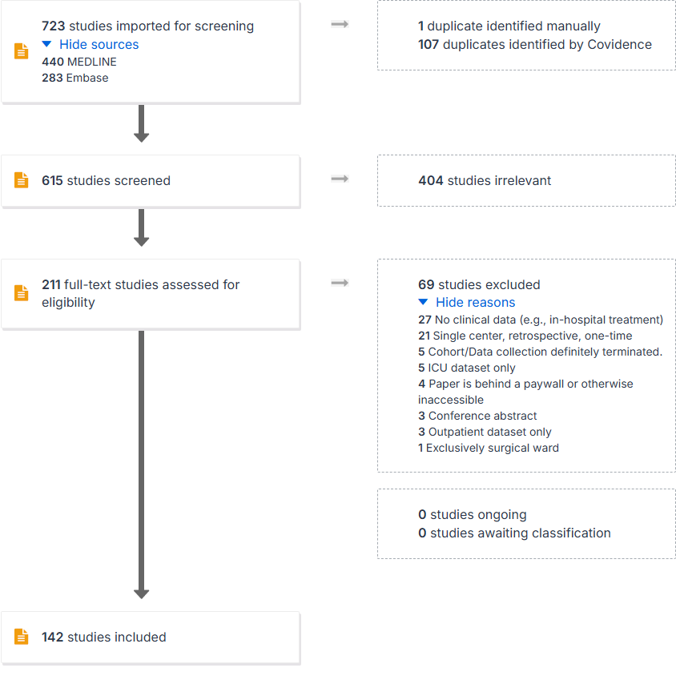

name | country | dataType | dataAvailability | statusDataCollection | n |
|---|---|---|---|---|---|
Covid 19 HGI | 19 | ||||
Department of Veterans Health Administration (VHA) healthcare system | USA | Hospital data (electronic health record) | No | Yes | 16 |
DPC Japan | Japan | Hospital data (electronic health record) | No | Yes | 9 |
Kaiser Permanente Southern California (KPSC) | USA | Hospital data (electronic health record) | No | Yes | 5 |
Premier Healthcare Database | USA | Insurance/claims data (prescription data) | No | Yes | 5 |
Health Insurance Review and Assessment Service (HIRA) database | South Korea | Insurance/claims data (prescription data) | Yes | NI | 4 |
Mout Sinai Health System Data Warehouse | USA | Hospital data (electronic health record) | No | Yes | 4 |
AP-HP Data Warehouse | France | Hospital data (electronic health record) | No | Yes | 3 |
CORONADO Study | France | Hospital data (electronic health record) | No | NI | 3 |
HM Hospitales | Spain | Hospital data (electronic health record) | No | Yes | 3 |
KPNC Virtual Data Warehouse on exposures, outcomes, and covariates of interest | USA | Hospital data (electronic health record) | No | Yes | 3 |
OnCovid | Other: Europa wide | Disease specific network (cohort study) | No | NI | 3 |
CORIST Collaboration | Other: Italy | Hospital data (electronic health record) | NI | NI | 2 |
Hospital-based surveillance of COVID-19 and influenza cases in CH | Other: Switzerland | Hospital data (electronic health record) | No | Yes | 2 |
National COVID Cohort Collaborative (N3C) | USA | Hospital data (electronic health record); Disease specific network (cohort study) | No | Yes | 2 |
New York-Presbyterian Columbia University Irving Medical Center (NYP-CUIMC) | USA | Hospital data (electronic health record) | No | NI | 2 |
PREDI-CO | Other: Italy | Hospital data (electronic health record) | No | NI | 2 |
enterprise data warehouse (EDW) at Intermountain Healthcare | USA | Hospital data (electronic health record) | No | NI | 2 |
COVID19@Spain cohort | Spain | Hospital data (electronic health record) | No | No | 1 |
Hong Kong Hospital Authority (HA) | Other: Hong Kong | Hospital data (electronic health record); National registries (e.g. death registry, cancer registry, etc.) | No | NI | 1 |
Johns Hopkins CROWN Registry | USA | Hospital data (electronic health record) | No | NI | 1 |
4 Hospitals in Hubei Province, China | Other: China | Hospital data (electronic health record) | NI | NI | 1 |
Agency for Health Protection (AHP) of Milan | Other: Italy | National registries (e.g. death registry, cancer registry, etc.) | No | NI | 1 |
Amsterdam UMC | Other: Netherlands | Hospital data (electronic health record) | No | Yes | 1 |
Avon Longitudinal Study of Parents and Children (ALSPAC) | 1 | ||||
Bellvitge University Hospital Data Warehouse | Spain | Hospital data (electronic health record) | No | NI | 1 |
COVID-ALEH Registry | Other: Latin America: Argentina, Brazil, Chile, Colombia, Dominican Republic, Ecuador, Guatemala, Mexico, Paraguay, Peru, Uruguay | Hospital data (electronic health record) | NI | NI | 1 |
COVIREGI-JP | Japan | Hospital data (electronic health record); Disease specific network (cohort study) | No | Yes | 1 |
Clinical | Other: Hong Kong | Hospital data (electronic health record) | No | Yes | 1 |
Clinical Practice Research Datalink (CPRD) | UK | Other: Outpatient | No | Yes | 1 |
Community-Acquired Pneumonia Organization (CAPO) International Cohort study | Other: Not stated, but "12 countries" | Hospital data (electronic health record) | No | No | 1 |
Covid-Clinic-Toul cohort | France | Hospital data (electronic health record) | NI | NI | 1 |
DRC Ministry of Health’s COVID-19 Multi-Sectoral Response Committee database | Other: Democratic Republic Congo | Hospital data (electronic health record); National registries (e.g. death registry, cancer registry, etc.) | NI | NI | 1 |
Danish National Patient Register | Denmark | Hospital data (electronic health record); National registries (e.g. death registry, cancer registry, etc.) | No | Yes | 1 |
ESMO-CoCARE | Other: World-Wide (UK, Spain, Switzerland, Russia, South Korea, Philippines, ...) | Hospital data (electronic health record); Disease specific network (cohort study) | No | NI | 1 |
Emergency-Rheum | Other: China | Hospital data (electronic health record) | No | NI | 1 |
French COVID Cohort | France | Hospital data (electronic health record); Disease specific network (cohort study) | Yes | Yes | 1 |
HIRA-Covid19 | South Korea | Insurance/claims data (prescription data) | No | NI | 1 |
HOMERuN Network | USA | Hospital data (electronic health record) | No | NI | 1 |
Harvard Pilgrim Health Care Institute (HCA Healthcare Networks) | USA | Hospital data (electronic health record) | NI | NI | 1 |
Health and Economic Modelling of AMR in Australia (HEMAA) population-level simulation model | Other: Australia | Other: "Population-level simulation model" | NI | NI | 1 |
HealthVerity | USA | Insurance/claims data (prescription data) | No | NI | 1 |
Hospitalized Adult Influenza Vaccine Effectiveness Network (HAIVEN) | USA | Hospital data (electronic health record) | No | No | 1 |
IQVIA databases | USA; Other: worldwide | Hospital data (electronic health record); Insurance/claims data (prescription data) | No | Yes | 1 |
ISACS-COVID-19 | Other: Europe | Hospital data (electronic health record) | No | NI | 1 |
International Study of Inflammation in COVID‐19 | Other: International | Hospital data (electronic health record) | NI | No | 1 |
J-RECOVER study group | Japan | Hospital data (electronic health record) | NI | NI | 1 |
Korean National Health Insurance Service (NHIS) database | South Korea | Insurance/claims data (prescription data) | No | Yes | 1 |
MGH Covid-19 Data Registry | USA | Hospital data (electronic health record) | No | NI | 1 |
Medicare | USA | Insurance/claims data (prescription data) | No | Yes | 1 |
Mi-COVID19 Initiative | USA | Hospital data (electronic health record) | No | No | 1 |
Mount Sinai Health System | USA | Hospital data (electronic health record) | NI | NI | 1 |
National Health Insurance Research Database (NHIRD) | Other: Taiwan | Insurance/claims data (prescription data) | No | Yes | 1 |
National Hospital Organization (NHO) Japan database | Japan | Hospital data (electronic health record) | No | Yes | 1 |
Northwestern Medicine Electronic Data | USA | Hospital data (electronic health record) | No | Yes | 1 |
Providence-Swedish healthcare system | USA | Insurance/claims data (prescription data) | No | Yes | 1 |
Qatar Cerner-system advanced | Other: Qatar | Hospital data (electronic health record); National registries (e.g. death registry, cancer registry, etc.) | No | Yes | 1 |
REACTing (the network, not the database) | France; Other: Luxembourg | Hospital data (electronic health record) | No | No | 1 |
Rhode Island Hospital | USA | Hospital data (electronic health record) | No | NI | 1 |
Rush University Hospital Data Warehouse | USA | Hospital data (electronic health record) | No | Yes | 1 |
Swedish COVID-19 Investigation for Future Insights | Other: Sweden | National registries (e.g. death registry, cancer registry, etc.); Other: Outpatient | No | NI | 1 |
System for Research in Primary Care (SIDIAP) | Spain | Hospital data (electronic health record); Other: Outpatient data | NI | NI | 1 |
The Civil Registration system | Denmark | National registries (e.g. death registry, cancer registry, etc.) | No | Yes | 1 |
The Danish National Prescription Registry | Denmark | Other: Outpatient prescriptions | No | Yes | 1 |
TriNetX database | Other: Global | Hospital data (electronic health record); Other: Outpatient? | No | Yes | 1 |
Two University Hospitals in Wuhan Region | Other: China | Hospital data (electronic health record) | No | NI | 1 |
UCLA | USA | Hospital data (electronic health record) | No | Yes | 1 |
University of Minnesota Clinical and Translational Institute (CTSI) data repository | USA | Hospital data (electronic health record) | No | Yes | 1 |
University of Washington (UW) Enterprise Data Warehouse | USA | Hospital data (electronic health record) | No | Yes | 1 |
Vizient Clinical Data Base® (CDB) | USA | Insurance/claims data (prescription data) | No | Yes | 1 |
Inpatient databases
PRISMA Flowchart

Identified data bases
Number of databases : 70
What next?
Analogous approach to Sauer et al. ?
Requested access to databases, all necessary legal and ethical approvals
Defined a priori list of database elements to document and extract
\(\rightarrow\) Descriptive analyses